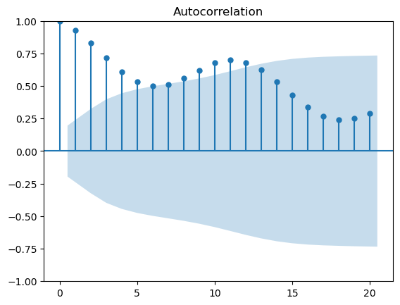
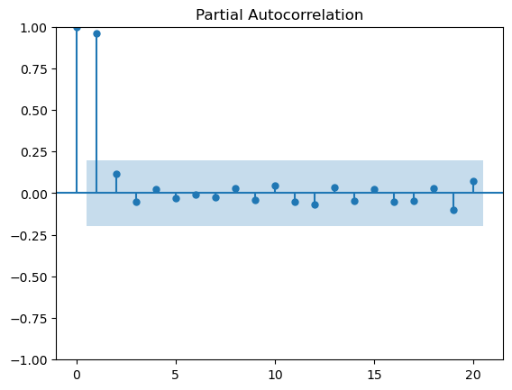
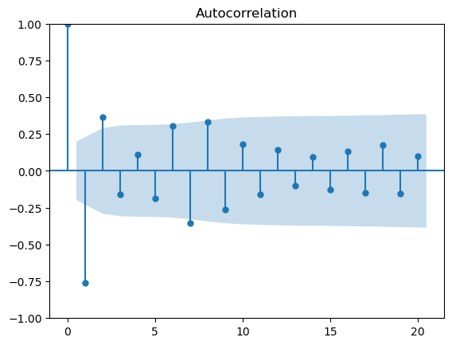
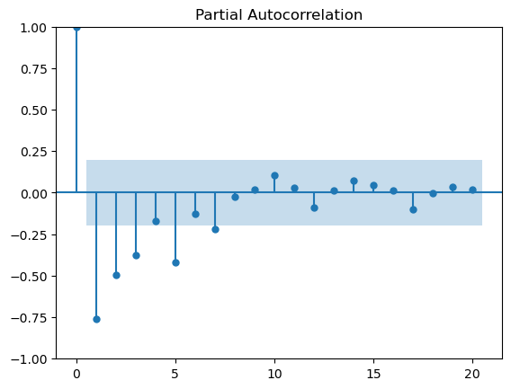
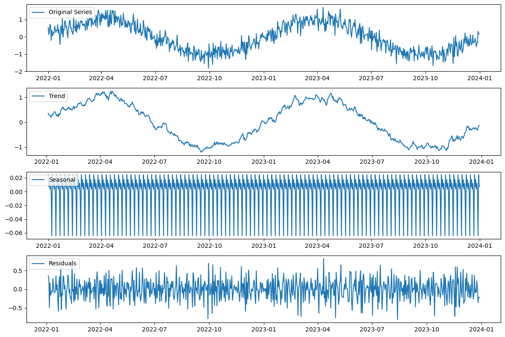

import numpy as np
import pandas as pd
import statsmodels.api as sm
t = np.arange(100)
trend = 0.5 * t
season = 10 * np.sin(2 * np.pi * t / 12)
noise = np.random.normal(0, 1, 100)
y = trend + noise
y_season = trend + season + noise
x = 5 * np.sin(2 * np.pi * t)
data = pd.DataFrame({'Time': t, 'Value': y, 'Value_Season': y_season, 'Exo_Var': x})
data
| Time | Value | Value_Season | Exo_Var | |
|---|---|---|---|---|
| 0 | 0 | -1.069020 | -1.069020 | 0.000000e+00 |
| 1 | 1 | 0.725504 | 5.725504 | -1.224647e-15 |
| 2 | 2 | 0.219341 | 8.879595 | -2.449294e-15 |
| 3 | 3 | 2.437837 | 12.437837 | -3.673940e-15 |
| 4 | 4 | 2.599972 | 11.260226 | -4.898587e-15 |
| ... | ... | ... | ... | ... |
| 95 | 95 | 48.410054 | 43.410054 | -9.760036e-15 |
| 96 | 96 | 48.014079 | 48.014079 | -1.175661e-13 |
| 97 | 97 | 48.599291 | 53.599291 | -2.253721e-13 |
| 98 | 98 | 48.937944 | 57.598198 | -3.331782e-13 |
| 99 | 99 | 50.479636 | 60.479636 | 1.274499e-13 |
100 rows × 4 columns
data['Value'].plot()
<Axes: >
from statsmodels.graphics.tsaplots import plot_acf, plot_pacf
acf_original = plot_acf(data['Value_Season'])
pacf_original = plot_pacf(data['Value'])


from statsmodels.tsa.stattools import adfuller
adf_test = adfuller(data['Value'])
print(f'p-value: {adf_test[1]}')
p-value: 0.9804706760578226
from statsmodels.tsa.stattools import adfuller
adf_test = adfuller(data['Value'].diff().diff().dropna())
print(f'p-value: {adf_test[1]}')
p-value: 1.5491081577324096e-10
df_train_diff = data['Value'].diff().diff().dropna()
df_train_diff.plot()
<Axes: >
acf_diff = plot_acf(df_train_diff)
pacf_diff = plot_pacf(df_train_diff)


from statsmodels.tsa.arima.model import ARIMA
model = ARIMA(data['Value'], order=(0,1,2))
model_fit = model.fit()
print(model_fit.summary())
SARIMAX Results
==============================================================================
Dep. Variable: Value No. Observations: 100
Model: ARIMA(0, 1, 2) Log Likelihood -176.077
Date: Sun, 03 Dec 2023 AIC 358.155
Time: 23:58:34 BIC 365.940
Sample: 0 HQIC 361.305
- 100
Covariance Type: opg
==============================================================================
coef std err z P>|z| [0.025 0.975]
------------------------------------------------------------------------------
ma.L1 -0.4761 0.098 -4.853 0.000 -0.668 -0.284
ma.L2 0.3014 0.107 2.808 0.005 0.091 0.512
sigma2 2.0460 0.319 6.413 0.000 1.421 2.671
===================================================================================
Ljung-Box (L1) (Q): 5.07 Jarque-Bera (JB): 3.00
Prob(Q): 0.02 Prob(JB): 0.22
Heteroskedasticity (H): 1.29 Skew: -0.31
Prob(H) (two-sided): 0.47 Kurtosis: 3.58
===================================================================================
Warnings:
[1] Covariance matrix calculated using the outer product of gradients (complex-step).
import pmdarima as pm
auto_arima = pm.auto_arima(data['Value'], stepwise=False, seasonal=False)
auto_arima
ARIMA(5,1,0)(0,0,0)[0] interceptIn a Jupyter environment, please rerun this cell to show the HTML representation or trust the notebook.
On GitHub, the HTML representation is unable to render, please try loading this page with nbviewer.org.
ARIMA(5,1,0)(0,0,0)[0] intercept
from statsmodels.tsa.arima.model import ARIMA
model = ARIMA(data['Value'], order=(5,1,0))
model_fit = model.fit()
print(model_fit.summary())
SARIMAX Results
==============================================================================
Dep. Variable: Value No. Observations: 100
Model: ARIMA(5, 1, 0) Log Likelihood -172.350
Date: Sun, 03 Dec 2023 AIC 356.700
Time: 23:58:37 BIC 372.270
Sample: 0 HQIC 363.000
- 100
Covariance Type: opg
==============================================================================
coef std err z P>|z| [0.025 0.975]
------------------------------------------------------------------------------
ar.L1 -0.5177 0.105 -4.928 0.000 -0.724 -0.312
ar.L2 0.1069 0.132 0.807 0.420 -0.153 0.366
ar.L3 0.2887 0.125 2.309 0.021 0.044 0.534
ar.L4 0.2951 0.118 2.505 0.012 0.064 0.526
ar.L5 0.1108 0.096 1.153 0.249 -0.077 0.299
sigma2 1.8907 0.294 6.438 0.000 1.315 2.466
===================================================================================
Ljung-Box (L1) (Q): 1.68 Jarque-Bera (JB): 2.56
Prob(Q): 0.20 Prob(JB): 0.28
Heteroskedasticity (H): 1.27 Skew: -0.35
Prob(H) (two-sided): 0.49 Kurtosis: 3.35
===================================================================================
Warnings:
[1] Covariance matrix calculated using the outer product of gradients (complex-step).
import pandas as pd
import numpy as np
from statsmodels.tsa.seasonal import seasonal_decompose
import matplotlib.pyplot as plt
# Creazione di dati sintetici
np.random.seed(0)
date_rng = pd.date_range(start='2022-01-01', end='2023-12-31', freq='D')
data = pd.DataFrame(date_rng, columns=['date'])
data['Value_Season'] = np.sin(np.arange(len(date_rng)) * 2 * np.pi / 365) + np.random.normal(scale=0.3, size=len(date_rng))
# Imposta l'indice temporale
data = data.set_index('date')
# Decomposizione della serie temporale
result = seasonal_decompose(data['Value_Season'], model='additive')
# Plot della decomposizione
plt.figure(figsize=(12, 8))
# Serie originale
plt.subplot(4, 1, 1)
plt.plot(data['Value_Season'], label='Original Series')
plt.legend(loc='upper left')
# Trend
plt.subplot(4, 1, 2)
plt.plot(result.trend, label='Trend')
plt.legend(loc='upper left')
# Stagionalità
plt.subplot(4, 1, 3)
plt.plot(result.seasonal, label='Seasonal')
plt.legend(loc='upper left')
# Residui
plt.subplot(4, 1, 4)
plt.plot(result.resid, label='Residuals')
plt.legend(loc='upper left')
plt.tight_layout()
plt.show()

import pmdarima as pm
auto_arima = pm.auto_arima(data['Value_Season'], stepwise=False, seasonal=False)
auto_arima
ARIMA(1,1,2)(0,0,0)[0] interceptIn a Jupyter environment, please rerun this cell to show the HTML representation or trust the notebook.
On GitHub, the HTML representation is unable to render, please try loading this page with nbviewer.org.
ARIMA(1,1,2)(0,0,0)[0] intercept
from statsmodels.tsa.statespace.sarimax import SARIMAX
model = SARIMAX(data['Value_Season'], order=(1, 1, 2), seasonal_order=(0, 1, 1, 12))
results = model.fit()
results.summary()
C:\Users\silve\AppData\Roaming\jupyterlab-desktop\jlab_server\lib\site-packages\statsmodels\tsa\base\tsa_model.py:473: ValueWarning: No frequency information was provided, so inferred frequency D will be used.
self._init_dates(dates, freq)
C:\Users\silve\AppData\Roaming\jupyterlab-desktop\jlab_server\lib\site-packages\statsmodels\tsa\base\tsa_model.py:473: ValueWarning: No frequency information was provided, so inferred frequency D will be used.
self._init_dates(dates, freq)
C:\Users\silve\AppData\Roaming\jupyterlab-desktop\jlab_server\lib\site-packages\statsmodels\tsa\statespace\sarimax.py:966: UserWarning: Non-stationary starting autoregressive parameters found. Using zeros as starting parameters.
warn('Non-stationary starting autoregressive parameters'
C:\Users\silve\AppData\Roaming\jupyterlab-desktop\jlab_server\lib\site-packages\statsmodels\tsa\statespace\sarimax.py:978: UserWarning: Non-invertible starting MA parameters found. Using zeros as starting parameters.
warn('Non-invertible starting MA parameters found.'
| Dep. Variable: | Value_Season | No. Observations: | 730 |
|---|---|---|---|
| Model: | SARIMAX(1, 1, 2)x(0, 1, [1], 12) | Log Likelihood | -204.260 |
| Date: | Sun, 03 Dec 2023 | AIC | 418.520 |
| Time: | 23:58:49 | BIC | 441.395 |
| Sample: | 01-01-2022 | HQIC | 427.352 |
| - 12-31-2023 | |||
| Covariance Type: | opg |
| coef | std err | z | P>|z| | [0.025 | 0.975] | |
|---|---|---|---|---|---|---|
| ar.L1 | 0.9889 | 0.009 | 105.831 | 0.000 | 0.971 | 1.007 |
| ma.L1 | -1.9146 | 0.015 | -129.879 | 0.000 | -1.944 | -1.886 |
| ma.L2 | 0.9218 | 0.014 | 63.959 | 0.000 | 0.894 | 0.950 |
| ma.S.L12 | -0.9985 | 0.287 | -3.473 | 0.001 | -1.562 | -0.435 |
| sigma2 | 0.0968 | 0.027 | 3.614 | 0.000 | 0.044 | 0.149 |
| Ljung-Box (L1) (Q): | 0.11 | Jarque-Bera (JB): | 1.17 |
|---|---|---|---|
| Prob(Q): | 0.74 | Prob(JB): | 0.56 |
| Heteroskedasticity (H): | 1.19 | Skew: | -0.08 |
| Prob(H) (two-sided): | 0.19 | Kurtosis: | 3.11 |
Warnings:
[1] Covariance matrix calculated using the outer product of gradients (complex-step).
model = SARIMAX(data['Value_Season'], order=(1, 1, 2))
results = model.fit()
results.summary()
C:\Users\silve\AppData\Roaming\jupyterlab-desktop\jlab_server\lib\site-packages\statsmodels\tsa\base\tsa_model.py:473: ValueWarning: No frequency information was provided, so inferred frequency D will be used.
self._init_dates(dates, freq)
C:\Users\silve\AppData\Roaming\jupyterlab-desktop\jlab_server\lib\site-packages\statsmodels\tsa\base\tsa_model.py:473: ValueWarning: No frequency information was provided, so inferred frequency D will be used.
self._init_dates(dates, freq)
C:\Users\silve\AppData\Roaming\jupyterlab-desktop\jlab_server\lib\site-packages\statsmodels\tsa\statespace\sarimax.py:966: UserWarning: Non-stationary starting autoregressive parameters found. Using zeros as starting parameters.
warn('Non-stationary starting autoregressive parameters'
C:\Users\silve\AppData\Roaming\jupyterlab-desktop\jlab_server\lib\site-packages\statsmodels\tsa\statespace\sarimax.py:978: UserWarning: Non-invertible starting MA parameters found. Using zeros as starting parameters.
warn('Non-invertible starting MA parameters found.'
| Dep. Variable: | Value_Season | No. Observations: | 730 |
|---|---|---|---|
| Model: | SARIMAX(1, 1, 2) | Log Likelihood | -183.534 |
| Date: | Sun, 03 Dec 2023 | AIC | 375.068 |
| Time: | 23:58:50 | BIC | 393.435 |
| Sample: | 01-01-2022 | HQIC | 382.154 |
| - 12-31-2023 | |||
| Covariance Type: | opg |
| coef | std err | z | P>|z| | [0.025 | 0.975] | |
|---|---|---|---|---|---|---|
| ar.L1 | 0.9843 | 0.010 | 101.623 | 0.000 | 0.965 | 1.003 |
| ma.L1 | -1.9129 | 0.015 | -129.975 | 0.000 | -1.942 | -1.884 |
| ma.L2 | 0.9206 | 0.014 | 64.160 | 0.000 | 0.892 | 0.949 |
| sigma2 | 0.0965 | 0.005 | 18.600 | 0.000 | 0.086 | 0.107 |
| Ljung-Box (L1) (Q): | 0.10 | Jarque-Bera (JB): | 0.56 |
|---|---|---|---|
| Prob(Q): | 0.75 | Prob(JB): | 0.75 |
| Heteroskedasticity (H): | 1.10 | Skew: | -0.05 |
| Prob(H) (two-sided): | 0.45 | Kurtosis: | 2.90 |
Warnings:
[1] Covariance matrix calculated using the outer product of gradients (complex-step).
import pandas as pd
df = pd.read_csv('BTC-USD.csv')
df
---------------------------------------------------------------------------
FileNotFoundError Traceback (most recent call last)
Cell In[15], line 3
1 import pandas as pd
----> 3 df = pd.read_csv('BTC-USD.csv')
5 df
File ~\AppData\Roaming\jupyterlab-desktop\jlab_server\lib\site-packages\pandas\io\parsers\readers.py:912, in read_csv(filepath_or_buffer, sep, delimiter, header, names, index_col, usecols, dtype, engine, converters, true_values, false_values, skipinitialspace, skiprows, skipfooter, nrows, na_values, keep_default_na, na_filter, verbose, skip_blank_lines, parse_dates, infer_datetime_format, keep_date_col, date_parser, date_format, dayfirst, cache_dates, iterator, chunksize, compression, thousands, decimal, lineterminator, quotechar, quoting, doublequote, escapechar, comment, encoding, encoding_errors, dialect, on_bad_lines, delim_whitespace, low_memory, memory_map, float_precision, storage_options, dtype_backend)
899 kwds_defaults = _refine_defaults_read(
900 dialect,
901 delimiter,
(...)
908 dtype_backend=dtype_backend,
909 )
910 kwds.update(kwds_defaults)
--> 912 return _read(filepath_or_buffer, kwds)
File ~\AppData\Roaming\jupyterlab-desktop\jlab_server\lib\site-packages\pandas\io\parsers\readers.py:577, in _read(filepath_or_buffer, kwds)
574 _validate_names(kwds.get("names", None))
576 # Create the parser.
--> 577 parser = TextFileReader(filepath_or_buffer, **kwds)
579 if chunksize or iterator:
580 return parser
File ~\AppData\Roaming\jupyterlab-desktop\jlab_server\lib\site-packages\pandas\io\parsers\readers.py:1407, in TextFileReader.__init__(self, f, engine, **kwds)
1404 self.options["has_index_names"] = kwds["has_index_names"]
1406 self.handles: IOHandles | None = None
-> 1407 self._engine = self._make_engine(f, self.engine)
File ~\AppData\Roaming\jupyterlab-desktop\jlab_server\lib\site-packages\pandas\io\parsers\readers.py:1661, in TextFileReader._make_engine(self, f, engine)
1659 if "b" not in mode:
1660 mode += "b"
-> 1661 self.handles = get_handle(
1662 f,
1663 mode,
1664 encoding=self.options.get("encoding", None),
1665 compression=self.options.get("compression", None),
1666 memory_map=self.options.get("memory_map", False),
1667 is_text=is_text,
1668 errors=self.options.get("encoding_errors", "strict"),
1669 storage_options=self.options.get("storage_options", None),
1670 )
1671 assert self.handles is not None
1672 f = self.handles.handle
File ~\AppData\Roaming\jupyterlab-desktop\jlab_server\lib\site-packages\pandas\io\common.py:859, in get_handle(path_or_buf, mode, encoding, compression, memory_map, is_text, errors, storage_options)
854 elif isinstance(handle, str):
855 # Check whether the filename is to be opened in binary mode.
856 # Binary mode does not support 'encoding' and 'newline'.
857 if ioargs.encoding and "b" not in ioargs.mode:
858 # Encoding
--> 859 handle = open(
860 handle,
861 ioargs.mode,
862 encoding=ioargs.encoding,
863 errors=errors,
864 newline="",
865 )
866 else:
867 # Binary mode
868 handle = open(handle, ioargs.mode)
FileNotFoundError: [Errno 2] No such file or directory: 'BTC-USD.csv'
df = df[[ 'Close']]
df
| Close | |
|---|---|
| 0 | 457.334015 |
| 1 | 424.440002 |
| 2 | 394.795990 |
| 3 | 408.903992 |
| 4 | 398.821014 |
| ... | ... |
| 3359 | 37831.085938 |
| 3360 | 37858.492188 |
| 3361 | 37712.746094 |
| 3362 | 38688.750000 |
| 3363 | 38792.355469 |
3364 rows × 1 columns
import datetime
def str_to_datetime(s):
split = s.split('-')
year, month, day = int(split[0]), int(split[1]), int(split[2])
return datetime.datetime(year=year, month=month, day=day)
df['Date'] = df['Date'].apply(str_to_datetime)
df.index = df.pop('Date')
df
C:\Users\silve\AppData\Local\Temp\ipykernel_9520\741250315.py:8: SettingWithCopyWarning:
A value is trying to be set on a copy of a slice from a DataFrame.
Try using .loc[row_indexer,col_indexer] = value instead
See the caveats in the documentation: https://pandas.pydata.org/pandas-docs/stable/user_guide/indexing.html#returning-a-view-versus-a-copy
df['Date'] = df['Date'].apply(str_to_datetime)
| Close | |
|---|---|
| Date | |
| 2014-09-17 | 457.334015 |
| 2014-09-18 | 424.440002 |
| 2014-09-19 | 394.795990 |
| 2014-09-20 | 408.903992 |
| 2014-09-21 | 398.821014 |
| ... | ... |
| 2023-11-28 | 37831.085938 |
| 2023-11-29 | 37858.492188 |
| 2023-11-30 | 37712.746094 |
| 2023-12-01 | 38688.750000 |
| 2023-12-02 | 38792.355469 |
3364 rows × 1 columns
df.dtypes
Close float64
dtype: object
df.plot()
<Axes: >
import numpy as np
df = np.log(df)
df.plot()
<Axes: >
msk = (df.index < round(len(df) * 0.8))
df_train = df[msk].copy()
df_train = df[~msk].copy()
from statsmodels.graphics.tsaplots import plot_acf, plot_pacf
acf_original = plot_acf(df_train)
pacf_original = plot_pacf(df_train)
---------------------------------------------------------------------------
ImportError Traceback (most recent call last)
Cell In[49], line 1
----> 1 from statsmodels.graphics.tsaplots import plot_acf, plot_pacf
3 acf_original = plot_acf(df_train)
5 pacf_original = plot_pacf(df_train)
File ~\AppData\Roaming\jupyterlab-desktop\jlab_server\lib\site-packages\statsmodels\__init__.py:1
----> 1 from statsmodels.compat.patsy import monkey_patch_cat_dtype
3 from statsmodels._version import __version__, __version_tuple__
5 __version_info__ = __version_tuple__
File ~\AppData\Roaming\jupyterlab-desktop\jlab_server\lib\site-packages\statsmodels\compat\__init__.py:1
----> 1 from statsmodels.tools._testing import PytestTester
3 from .python import (
4 PY37,
5 asunicode,
(...)
11 lfilter,
12 )
14 __all__ = [
15 "PY37",
16 "asunicode",
(...)
23 "test",
24 ]
File ~\AppData\Roaming\jupyterlab-desktop\jlab_server\lib\site-packages\statsmodels\tools\__init__.py:2
1 from .tools import add_constant, categorical
----> 2 from statsmodels.tools._testing import PytestTester
4 __all__ = ['test', 'add_constant', 'categorical']
6 test = PytestTester()
File ~\AppData\Roaming\jupyterlab-desktop\jlab_server\lib\site-packages\statsmodels\tools\_testing.py:17
14 from packaging.version import Version, parse
16 import numpy as np
---> 17 from numpy.testing import assert_allclose, assert_
19 import pandas as pd
22 class PytestTester:
File ~\AppData\Roaming\jupyterlab-desktop\jlab_server\lib\site-packages\numpy\testing\__init__.py:11
8 from unittest import TestCase
10 from . import _private
---> 11 from ._private.utils import *
12 from ._private.utils import (_assert_valid_refcount, _gen_alignment_data)
13 from ._private import extbuild, decorators as dec
File ~\AppData\Roaming\jupyterlab-desktop\jlab_server\lib\site-packages\numpy\testing\_private\utils.py:23
20 import numpy as np
21 from numpy.core import(
22 intp, float32, empty, arange, array_repr, ndarray, isnat, array)
---> 23 import numpy.linalg.lapack_lite
25 from io import StringIO
27 __all__ = [
28 'assert_equal', 'assert_almost_equal', 'assert_approx_equal',
29 'assert_array_equal', 'assert_array_less', 'assert_string_equal',
(...)
39 '_OLD_PROMOTION'
40 ]
ImportError: DLL load failed while importing lapack_lite: Impossibile trovare il modulo specificato.
import numpy as np
def df_to_windowed_df(dataframe, first_date_str, last_date_str, n=3):
first_date = str_to_datetime(first_date_str)
last_date = str_to_datetime(last_date_str)
target_date = first_date
dates = []
X, Y = [], []
last_time = False
while True:
df_subset = dataframe.loc[:target_date].tail(n+1)
if len(df_subset) != n+1:
print(f'Error: Window of size {n} is too large for date {target_date}')
return
values = df_subset['Close'].to_numpy()
x, y = values[:-1], values[-1]
dates.append(target_date)
X.append(x)
Y.append(y)
next_week = dataframe.loc[target_date:target_date+datetime.timedelta(days=7)]
next_datetime_str = str(next_week.head(2).tail(1).index.values[0])
next_date_str = next_datetime_str.split('T')[0]
year_month_day = next_date_str.split('-')
year, month, day = year_month_day
next_date = datetime.datetime(day=int(day), month=int(month), year=int(year))
if last_time:
break
target_date = next_date
if target_date == last_date:
last_time = True
ret_df = pd.DataFrame({})
ret_df['Target Date'] = dates
X = np.array(X)
for i in range(0, n):
X[:, i]
ret_df[f'Target-{n-i}'] = X[:, i]
ret_df['Target'] = Y
return ret_df
# Start day second time around: '2021-03-25'
windowed_df = df_to_windowed_df(df,
'2022-01-01',
'2022-12-31',
n=3)
windowed_df
| Target Date | Target-3 | Target-2 | Target-1 | Target | |
|---|---|---|---|---|---|
| 0 | 2022-01-01 | 46444.710938 | 47178.125000 | 46306.445313 | 47686.812500 |
| 1 | 2022-01-02 | 47178.125000 | 46306.445313 | 47686.812500 | 47345.218750 |
| 2 | 2022-01-03 | 46306.445313 | 47686.812500 | 47345.218750 | 46458.117188 |
| 3 | 2022-01-04 | 47686.812500 | 47345.218750 | 46458.117188 | 45897.574219 |
| 4 | 2022-01-05 | 47345.218750 | 46458.117188 | 45897.574219 | 43569.003906 |
| ... | ... | ... | ... | ... | ... |
| 360 | 2022-12-27 | 16847.755859 | 16841.986328 | 16919.804688 | 16717.173828 |
| 361 | 2022-12-28 | 16841.986328 | 16919.804688 | 16717.173828 | 16552.572266 |
| 362 | 2022-12-29 | 16919.804688 | 16717.173828 | 16552.572266 | 16642.341797 |
| 363 | 2022-12-30 | 16717.173828 | 16552.572266 | 16642.341797 | 16602.585938 |
| 364 | 2022-12-31 | 16552.572266 | 16642.341797 | 16602.585938 | 16547.496094 |
365 rows × 5 columns
def windowed_df_to_date_X_y(windowed_dataframe):
df_as_np = windowed_dataframe.to_numpy()
dates = df_as_np[:, 0]
middle_matrix = df_as_np[:, 1:-1]
X = middle_matrix.reshape((len(dates), middle_matrix.shape[1], 1))
Y = df_as_np[:, -1]
return dates, X.astype(np.float32), Y.astype(np.float32)
dates, X, y = windowed_df_to_date_X_y(windowed_df)
dates.shape, X.shape, y.shape
((365,), (365, 3, 1), (365,))
q_80 = int(len(dates) * .8)
q_90 = int(len(dates) * .9)
dates_train, X_train, y_train = dates[:q_80], X[:q_80], y[:q_80]
dates_val, X_val, y_val = dates[q_80:q_90], X[q_80:q_90], y[q_80:q_90]
dates_test, X_test, y_test = dates[q_90:], X[q_90:], y[q_90:]
plt.plot(dates_train, y_train)
plt.plot(dates_val, y_val)
plt.plot(dates_test, y_test)
plt.legend(['Train', 'Validation', 'Test'])
<matplotlib.legend.Legend at 0x1e6990575e0>
from tensorflow.keras.models import Sequential
from tensorflow.keras.optimizers import Adam
from tensorflow.keras import layers
model = Sequential([layers.Input((3, 1)),
layers.LSTM(64),
layers.Dense(32, activation='relu'),
layers.Dense(32, activation='relu'),
layers.Dense(1)])
model.compile(loss='mse',
optimizer=Adam(learning_rate=0.001),
metrics=['mean_absolute_error'])
model.fit(X_train, y_train, validation_data=(X_val, y_val), epochs=100)
Epoch 1/100
10/10 [==============================] - 3s 56ms/step - loss: 1044386624.0000 - mean_absolute_error: 30817.0078 - val_loss: 348675808.0000 - val_mean_absolute_error: 18577.3457
Epoch 2/100
10/10 [==============================] - 0s 6ms/step - loss: 1044360384.0000 - mean_absolute_error: 30816.5781 - val_loss: 348660608.0000 - val_mean_absolute_error: 18576.9355
Epoch 3/100
10/10 [==============================] - 0s 7ms/step - loss: 1044333312.0000 - mean_absolute_error: 30816.1445 - val_loss: 348641632.0000 - val_mean_absolute_error: 18576.4277
Epoch 4/100
10/10 [==============================] - 0s 6ms/step - loss: 1044295936.0000 - mean_absolute_error: 30815.5410 - val_loss: 348613568.0000 - val_mean_absolute_error: 18575.6699
Epoch 5/100
10/10 [==============================] - 0s 6ms/step - loss: 1044242560.0000 - mean_absolute_error: 30814.6719 - val_loss: 348574752.0000 - val_mean_absolute_error: 18574.6270
Epoch 6/100
10/10 [==============================] - 0s 8ms/step - loss: 1044170496.0000 - mean_absolute_error: 30813.5000 - val_loss: 348523680.0000 - val_mean_absolute_error: 18573.2520
Epoch 7/100
10/10 [==============================] - 0s 6ms/step - loss: 1044075456.0000 - mean_absolute_error: 30811.9590 - val_loss: 348456864.0000 - val_mean_absolute_error: 18571.4512
Epoch 8/100
10/10 [==============================] - 0s 7ms/step - loss: 1043952128.0000 - mean_absolute_error: 30809.9629 - val_loss: 348370976.0000 - val_mean_absolute_error: 18569.1387
Epoch 9/100
10/10 [==============================] - 0s 6ms/step - loss: 1043793472.0000 - mean_absolute_error: 30807.4043 - val_loss: 348262016.0000 - val_mean_absolute_error: 18566.2051
Epoch 10/100
10/10 [==============================] - 0s 6ms/step - loss: 1043596032.0000 - mean_absolute_error: 30804.1855 - val_loss: 348126592.0000 - val_mean_absolute_error: 18562.5566
Epoch 11/100
10/10 [==============================] - 0s 7ms/step - loss: 1043350720.0000 - mean_absolute_error: 30800.1953 - val_loss: 347959456.0000 - val_mean_absolute_error: 18558.0566
Epoch 12/100
10/10 [==============================] - 0s 7ms/step - loss: 1043052544.0000 - mean_absolute_error: 30795.3262 - val_loss: 347757952.0000 - val_mean_absolute_error: 18552.6270
Epoch 13/100
10/10 [==============================] - 0s 9ms/step - loss: 1042691008.0000 - mean_absolute_error: 30789.5039 - val_loss: 347518784.0000 - val_mean_absolute_error: 18546.1797
Epoch 14/100
10/10 [==============================] - 0s 9ms/step - loss: 1042264896.0000 - mean_absolute_error: 30782.5586 - val_loss: 347233984.0000 - val_mean_absolute_error: 18538.4980
Epoch 15/100
10/10 [==============================] - 0s 6ms/step - loss: 1041758912.0000 - mean_absolute_error: 30774.3555 - val_loss: 346901504.0000 - val_mean_absolute_error: 18529.5293
Epoch 16/100
10/10 [==============================] - 0s 7ms/step - loss: 1041176128.0000 - mean_absolute_error: 30764.9180 - val_loss: 346523456.0000 - val_mean_absolute_error: 18519.3262
Epoch 17/100
10/10 [==============================] - 0s 7ms/step - loss: 1040505536.0000 - mean_absolute_error: 30754.0234 - val_loss: 346082880.0000 - val_mean_absolute_error: 18507.4277
Epoch 18/100
10/10 [==============================] - 0s 6ms/step - loss: 1039739648.0000 - mean_absolute_error: 30741.3867 - val_loss: 345577632.0000 - val_mean_absolute_error: 18493.7734
Epoch 19/100
10/10 [==============================] - 0s 7ms/step - loss: 1038850752.0000 - mean_absolute_error: 30727.1035 - val_loss: 345013248.0000 - val_mean_absolute_error: 18478.5078
Epoch 20/100
10/10 [==============================] - 0s 8ms/step - loss: 1037877568.0000 - mean_absolute_error: 30711.0957 - val_loss: 344381568.0000 - val_mean_absolute_error: 18461.4082
Epoch 21/100
10/10 [==============================] - 0s 8ms/step - loss: 1036774272.0000 - mean_absolute_error: 30693.2012 - val_loss: 343677728.0000 - val_mean_absolute_error: 18442.3359
Epoch 22/100
10/10 [==============================] - 0s 12ms/step - loss: 1035546816.0000 - mean_absolute_error: 30673.3398 - val_loss: 342901024.0000 - val_mean_absolute_error: 18421.2637
Epoch 23/100
10/10 [==============================] - 0s 7ms/step - loss: 1034201088.0000 - mean_absolute_error: 30651.3008 - val_loss: 342039936.0000 - val_mean_absolute_error: 18397.8770
Epoch 24/100
10/10 [==============================] - 0s 6ms/step - loss: 1032724800.0000 - mean_absolute_error: 30627.2012 - val_loss: 341110144.0000 - val_mean_absolute_error: 18372.5918
Epoch 25/100
10/10 [==============================] - 0s 7ms/step - loss: 1031108992.0000 - mean_absolute_error: 30600.8965 - val_loss: 340090048.0000 - val_mean_absolute_error: 18344.8105
Epoch 26/100
10/10 [==============================] - 0s 6ms/step - loss: 1029352960.0000 - mean_absolute_error: 30572.0488 - val_loss: 338978176.0000 - val_mean_absolute_error: 18314.4785
Epoch 27/100
10/10 [==============================] - 0s 7ms/step - loss: 1027446784.0000 - mean_absolute_error: 30540.8555 - val_loss: 337785696.0000 - val_mean_absolute_error: 18281.8965
Epoch 28/100
10/10 [==============================] - 0s 7ms/step - loss: 1025390976.0000 - mean_absolute_error: 30507.1602 - val_loss: 336494400.0000 - val_mean_absolute_error: 18246.5449
Epoch 29/100
10/10 [==============================] - 0s 6ms/step - loss: 1023169152.0000 - mean_absolute_error: 30470.6230 - val_loss: 335102112.0000 - val_mean_absolute_error: 18208.3535
Epoch 30/100
10/10 [==============================] - 0s 7ms/step - loss: 1020749568.0000 - mean_absolute_error: 30431.2871 - val_loss: 333607104.0000 - val_mean_absolute_error: 18167.2520
Epoch 31/100
10/10 [==============================] - 0s 7ms/step - loss: 1018184704.0000 - mean_absolute_error: 30389.0039 - val_loss: 332011584.0000 - val_mean_absolute_error: 18123.2891
Epoch 32/100
10/10 [==============================] - 0s 6ms/step - loss: 1015432512.0000 - mean_absolute_error: 30343.9355 - val_loss: 330315968.0000 - val_mean_absolute_error: 18076.4473
Epoch 33/100
10/10 [==============================] - 0s 7ms/step - loss: 1012523136.0000 - mean_absolute_error: 30295.6133 - val_loss: 328499712.0000 - val_mean_absolute_error: 18026.1387
Epoch 34/100
10/10 [==============================] - 0s 6ms/step - loss: 1009406912.0000 - mean_absolute_error: 30244.2129 - val_loss: 326589248.0000 - val_mean_absolute_error: 17973.0703
Epoch 35/100
10/10 [==============================] - 0s 7ms/step - loss: 1006107328.0000 - mean_absolute_error: 30189.9629 - val_loss: 324572576.0000 - val_mean_absolute_error: 17916.8828
Epoch 36/100
10/10 [==============================] - 0s 7ms/step - loss: 1002666816.0000 - mean_absolute_error: 30132.3184 - val_loss: 322446240.0000 - val_mean_absolute_error: 17857.4453
Epoch 37/100
10/10 [==============================] - 0s 6ms/step - loss: 999020352.0000 - mean_absolute_error: 30072.0957 - val_loss: 320236896.0000 - val_mean_absolute_error: 17795.4766
Epoch 38/100
10/10 [==============================] - 0s 7ms/step - loss: 995183808.0000 - mean_absolute_error: 30008.1270 - val_loss: 317872576.0000 - val_mean_absolute_error: 17728.9199
Epoch 39/100
10/10 [==============================] - 0s 7ms/step - loss: 991085696.0000 - mean_absolute_error: 29940.2227 - val_loss: 315391616.0000 - val_mean_absolute_error: 17658.8105
Epoch 40/100
10/10 [==============================] - 0s 6ms/step - loss: 986806208.0000 - mean_absolute_error: 29867.6270 - val_loss: 312733760.0000 - val_mean_absolute_error: 17583.3926
Epoch 41/100
10/10 [==============================] - 0s 8ms/step - loss: 982220544.0000 - mean_absolute_error: 29791.4316 - val_loss: 310002240.0000 - val_mean_absolute_error: 17505.5488
Epoch 42/100
10/10 [==============================] - 0s 7ms/step - loss: 977485120.0000 - mean_absolute_error: 29712.0410 - val_loss: 307154048.0000 - val_mean_absolute_error: 17424.0078
Epoch 43/100
10/10 [==============================] - 0s 6ms/step - loss: 972579136.0000 - mean_absolute_error: 29629.3145 - val_loss: 304201216.0000 - val_mean_absolute_error: 17339.0645
Epoch 44/100
10/10 [==============================] - 0s 6ms/step - loss: 967431424.0000 - mean_absolute_error: 29542.1270 - val_loss: 301088384.0000 - val_mean_absolute_error: 17249.0703
Epoch 45/100
10/10 [==============================] - 0s 7ms/step - loss: 962025024.0000 - mean_absolute_error: 29450.7188 - val_loss: 297862400.0000 - val_mean_absolute_error: 17155.3027
Epoch 46/100
10/10 [==============================] - 0s 6ms/step - loss: 956417216.0000 - mean_absolute_error: 29354.9766 - val_loss: 294495680.0000 - val_mean_absolute_error: 17056.8965
Epoch 47/100
10/10 [==============================] - 0s 7ms/step - loss: 950588928.0000 - mean_absolute_error: 29254.3770 - val_loss: 290989952.0000 - val_mean_absolute_error: 16953.8203
Epoch 48/100
10/10 [==============================] - 0s 7ms/step - loss: 944442880.0000 - mean_absolute_error: 29150.5000 - val_loss: 287414304.0000 - val_mean_absolute_error: 16848.0332
Epoch 49/100
10/10 [==============================] - 0s 6ms/step - loss: 938235136.0000 - mean_absolute_error: 29043.0449 - val_loss: 283728864.0000 - val_mean_absolute_error: 16738.3047
Epoch 50/100
10/10 [==============================] - 0s 7ms/step - loss: 931776512.0000 - mean_absolute_error: 28931.8320 - val_loss: 279936608.0000 - val_mean_absolute_error: 16624.6387
Epoch 51/100
10/10 [==============================] - 0s 7ms/step - loss: 925081088.0000 - mean_absolute_error: 28816.5352 - val_loss: 276035232.0000 - val_mean_absolute_error: 16506.8848
Epoch 52/100
10/10 [==============================] - 0s 8ms/step - loss: 918214976.0000 - mean_absolute_error: 28697.6289 - val_loss: 272061088.0000 - val_mean_absolute_error: 16386.0645
Epoch 53/100
10/10 [==============================] - 0s 8ms/step - loss: 911200000.0000 - mean_absolute_error: 28574.3594 - val_loss: 267921216.0000 - val_mean_absolute_error: 16259.2500
Epoch 54/100
10/10 [==============================] - 0s 9ms/step - loss: 903775424.0000 - mean_absolute_error: 28444.9375 - val_loss: 263622976.0000 - val_mean_absolute_error: 16126.5293
Epoch 55/100
10/10 [==============================] - 0s 6ms/step - loss: 896205696.0000 - mean_absolute_error: 28310.5859 - val_loss: 259233728.0000 - val_mean_absolute_error: 15989.8613
Epoch 56/100
10/10 [==============================] - 0s 7ms/step - loss: 888465600.0000 - mean_absolute_error: 28173.0410 - val_loss: 254816768.0000 - val_mean_absolute_error: 15851.1445
Epoch 57/100
10/10 [==============================] - 0s 7ms/step - loss: 880518656.0000 - mean_absolute_error: 28032.5254 - val_loss: 250269520.0000 - val_mean_absolute_error: 15707.0518
Epoch 58/100
10/10 [==============================] - 0s 6ms/step - loss: 872220096.0000 - mean_absolute_error: 27885.4160 - val_loss: 245548352.0000 - val_mean_absolute_error: 15556.0381
Epoch 59/100
10/10 [==============================] - 0s 7ms/step - loss: 863776768.0000 - mean_absolute_error: 27733.3105 - val_loss: 240778416.0000 - val_mean_absolute_error: 15401.9619
Epoch 60/100
10/10 [==============================] - 0s 7ms/step - loss: 855113216.0000 - mean_absolute_error: 27576.4844 - val_loss: 235881200.0000 - val_mean_absolute_error: 15242.1514
Epoch 61/100
10/10 [==============================] - 0s 6ms/step - loss: 846386816.0000 - mean_absolute_error: 27415.6270 - val_loss: 230955232.0000 - val_mean_absolute_error: 15079.6963
Epoch 62/100
10/10 [==============================] - 0s 7ms/step - loss: 837453184.0000 - mean_absolute_error: 27252.7246 - val_loss: 226009600.0000 - val_mean_absolute_error: 14914.8105
Epoch 63/100
10/10 [==============================] - 0s 10ms/step - loss: 828241280.0000 - mean_absolute_error: 27084.6191 - val_loss: 220892560.0000 - val_mean_absolute_error: 14742.2705
Epoch 64/100
10/10 [==============================] - 0s 8ms/step - loss: 818745088.0000 - mean_absolute_error: 26909.9277 - val_loss: 215672480.0000 - val_mean_absolute_error: 14564.1494
Epoch 65/100
10/10 [==============================] - 0s 9ms/step - loss: 809069760.0000 - mean_absolute_error: 26729.1660 - val_loss: 210352720.0000 - val_mean_absolute_error: 14380.3584
Epoch 66/100
10/10 [==============================] - 0s 6ms/step - loss: 799276544.0000 - mean_absolute_error: 26543.5332 - val_loss: 204992816.0000 - val_mean_absolute_error: 14192.7725
Epoch 67/100
10/10 [==============================] - 0s 6ms/step - loss: 789292416.0000 - mean_absolute_error: 26355.6914 - val_loss: 199653712.0000 - val_mean_absolute_error: 14003.4180
Epoch 68/100
10/10 [==============================] - 0s 7ms/step - loss: 779206144.0000 - mean_absolute_error: 26164.4512 - val_loss: 194251872.0000 - val_mean_absolute_error: 13809.1943
Epoch 69/100
10/10 [==============================] - 0s 6ms/step - loss: 769037120.0000 - mean_absolute_error: 25967.8672 - val_loss: 188772288.0000 - val_mean_absolute_error: 13609.3457
Epoch 70/100
10/10 [==============================] - 0s 7ms/step - loss: 758628672.0000 - mean_absolute_error: 25766.8672 - val_loss: 183304688.0000 - val_mean_absolute_error: 13406.9648
Epoch 71/100
10/10 [==============================] - 0s 7ms/step - loss: 748208064.0000 - mean_absolute_error: 25563.3418 - val_loss: 177824768.0000 - val_mean_absolute_error: 13201.0127
Epoch 72/100
10/10 [==============================] - 0s 7ms/step - loss: 737459072.0000 - mean_absolute_error: 25354.5312 - val_loss: 172262112.0000 - val_mean_absolute_error: 12988.6143
Epoch 73/100
10/10 [==============================] - 0s 7ms/step - loss: 726607360.0000 - mean_absolute_error: 25139.6934 - val_loss: 166634144.0000 - val_mean_absolute_error: 12770.1270
Epoch 74/100
10/10 [==============================] - 0s 7ms/step - loss: 715678144.0000 - mean_absolute_error: 24918.6172 - val_loss: 160986512.0000 - val_mean_absolute_error: 12547.0508
Epoch 75/100
10/10 [==============================] - 0s 6ms/step - loss: 704596160.0000 - mean_absolute_error: 24698.1328 - val_loss: 155484960.0000 - val_mean_absolute_error: 12325.8643
Epoch 76/100
10/10 [==============================] - 0s 7ms/step - loss: 693548608.0000 - mean_absolute_error: 24469.2070 - val_loss: 149751792.0000 - val_mean_absolute_error: 12091.0615
Epoch 77/100
10/10 [==============================] - 0s 6ms/step - loss: 682104896.0000 - mean_absolute_error: 24236.2383 - val_loss: 144189408.0000 - val_mean_absolute_error: 11858.8105
Epoch 78/100
10/10 [==============================] - 0s 6ms/step - loss: 670842624.0000 - mean_absolute_error: 24002.6133 - val_loss: 138626240.0000 - val_mean_absolute_error: 11621.8867
Epoch 79/100
10/10 [==============================] - 0s 7ms/step - loss: 659307520.0000 - mean_absolute_error: 23761.6094 - val_loss: 132989840.0000 - val_mean_absolute_error: 11376.8105
Epoch 80/100
10/10 [==============================] - 0s 6ms/step - loss: 647849408.0000 - mean_absolute_error: 23515.4844 - val_loss: 127420584.0000 - val_mean_absolute_error: 11129.3564
Epoch 81/100
10/10 [==============================] - 0s 7ms/step - loss: 636038656.0000 - mean_absolute_error: 23267.6035 - val_loss: 121918760.0000 - val_mean_absolute_error: 10879.3721
Epoch 82/100
10/10 [==============================] - 0s 7ms/step - loss: 624387712.0000 - mean_absolute_error: 23014.8027 - val_loss: 116398888.0000 - val_mean_absolute_error: 10622.6582
Epoch 83/100
10/10 [==============================] - 0s 7ms/step - loss: 612568128.0000 - mean_absolute_error: 22754.5098 - val_loss: 110888168.0000 - val_mean_absolute_error: 10360.0273
Epoch 84/100
10/10 [==============================] - 0s 6ms/step - loss: 600589568.0000 - mean_absolute_error: 22494.3750 - val_loss: 105559048.0000 - val_mean_absolute_error: 10099.5557
Epoch 85/100
10/10 [==============================] - 0s 7ms/step - loss: 588812224.0000 - mean_absolute_error: 22228.9141 - val_loss: 100165224.0000 - val_mean_absolute_error: 9828.8965
Epoch 86/100
10/10 [==============================] - 0s 8ms/step - loss: 576775232.0000 - mean_absolute_error: 21958.2363 - val_loss: 94905416.0000 - val_mean_absolute_error: 9557.5830
Epoch 87/100
10/10 [==============================] - 0s 7ms/step - loss: 564984704.0000 - mean_absolute_error: 21687.1367 - val_loss: 89794784.0000 - val_mean_absolute_error: 9286.3750
Epoch 88/100
10/10 [==============================] - 0s 7ms/step - loss: 553232896.0000 - mean_absolute_error: 21416.4199 - val_loss: 84805552.0000 - val_mean_absolute_error: 9013.7412
Epoch 89/100
10/10 [==============================] - 0s 6ms/step - loss: 541440192.0000 - mean_absolute_error: 21139.2539 - val_loss: 79826088.0000 - val_mean_absolute_error: 8733.1602
Epoch 90/100
10/10 [==============================] - 0s 6ms/step - loss: 529761376.0000 - mean_absolute_error: 20858.6113 - val_loss: 75018272.0000 - val_mean_absolute_error: 8453.4180
Epoch 91/100
10/10 [==============================] - 0s 8ms/step - loss: 518271776.0000 - mean_absolute_error: 20579.7207 - val_loss: 70364840.0000 - val_mean_absolute_error: 8173.5444
Epoch 92/100
10/10 [==============================] - 0s 6ms/step - loss: 506605408.0000 - mean_absolute_error: 20296.3496 - val_loss: 65758572.0000 - val_mean_absolute_error: 7886.7324
Epoch 93/100
10/10 [==============================] - 0s 7ms/step - loss: 494979328.0000 - mean_absolute_error: 20010.0176 - val_loss: 61306068.0000 - val_mean_absolute_error: 7599.2144
Epoch 94/100
10/10 [==============================] - 0s 7ms/step - loss: 483658592.0000 - mean_absolute_error: 19720.6191 - val_loss: 56979248.0000 - val_mean_absolute_error: 7308.9824
Epoch 95/100
10/10 [==============================] - 0s 6ms/step - loss: 472294784.0000 - mean_absolute_error: 19432.4160 - val_loss: 52861160.0000 - val_mean_absolute_error: 7021.6191
Epoch 96/100
10/10 [==============================] - 0s 7ms/step - loss: 461135744.0000 - mean_absolute_error: 19141.8535 - val_loss: 48819708.0000 - val_mean_absolute_error: 6727.6812
Epoch 97/100
10/10 [==============================] - 0s 8ms/step - loss: 449884896.0000 - mean_absolute_error: 18844.1309 - val_loss: 44861200.0000 - val_mean_absolute_error: 6426.7554
Epoch 98/100
10/10 [==============================] - 0s 8ms/step - loss: 438738528.0000 - mean_absolute_error: 18544.4883 - val_loss: 41119260.0000 - val_mean_absolute_error: 6128.7231
Epoch 99/100
10/10 [==============================] - 0s 9ms/step - loss: 427835744.0000 - mean_absolute_error: 18246.7734 - val_loss: 37537356.0000 - val_mean_absolute_error: 5829.1802
Epoch 100/100
10/10 [==============================] - 0s 7ms/step - loss: 416665760.0000 - mean_absolute_error: 17947.7168 - val_loss: 34117820.0000 - val_mean_absolute_error: 5528.0918
<keras.src.callbacks.History at 0x1e6a463cee0>
train_predictions = model.predict(X_train).flatten()
plt.plot(dates_train, train_predictions)
plt.plot(dates_train, y_train)
plt.legend(['Training Predictions', 'Training Observations'])
10/10 [==============================] - 0s 2ms/step
<matplotlib.legend.Legend at 0x1e6a8c2adc0>